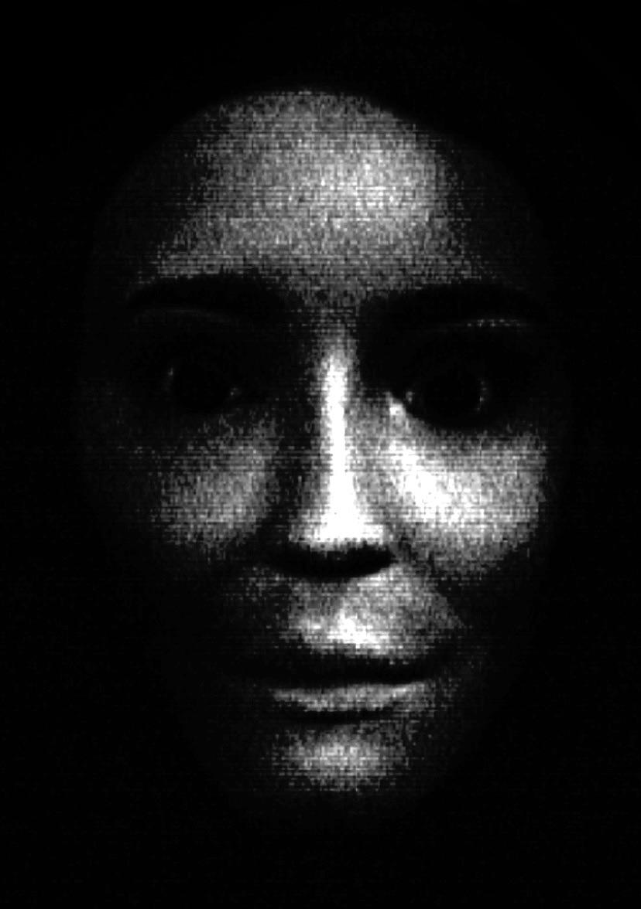

私たちのサイトは何についてのものですか? Minecraft ゲームの異常性に関する当社の Web サイト。前回、いくつかの異常を含むバージョンを収集し、それをプレイできるようにしました
ルール
1. この世で生き物を見つけたら、見つけられないようにしてください。
2. 生き物と接触しないでください
3. 彼らが望むことをしないでください
4. 生き物にコントロールさせないでください
5. 何か悪いことが起こった場合は、PC に影響を与える可能性があるため、世界から離れてバージョンを削除してください。
異常の兆候
世界の奇妙な構造、音や外部の異常
ゲームエンジンは変更される可能性があります
List of Anomaly Creatures

ĐĘĄŤH
User Comments
日付: January 21, 2025
メッセージ: それは私が今まで見た中で最も恐ろしいものでした
日付: January 21, 2025
メッセージ: Minecraftがこんなに不気味になるとは思わなかった
日付: January 21, 2025
メッセージ: もう我慢できない。これにはあまりにもショックを受けました。くたばれ
ここで試してください!